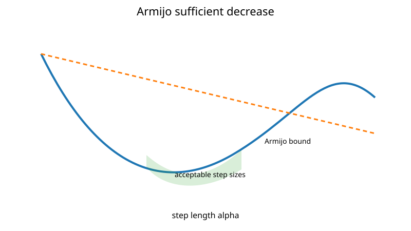

Line Search
A line search chooses the step length $\alpha_k$ after a search direction $p_k$ has been selected:
$$ x_{k+1} = x_k + \alpha_k p_k. $$
The direction determines where to move; the line search determines how far.
One-dimensional reduction
Define
$$ \phi(\alpha) = f(x_k + \alpha p_k). $$
A line search approximately minimizes $\phi(\alpha)$ for $\alpha>0$ or finds a step that satisfies sufficient-decrease conditions.
Exact minimization is usually unnecessary and can cost more than it saves.
Armijo sufficient decrease
The Armijo condition requires
$$ f(x_k + \alpha p_k) \le f(x_k) + c_1\alpha\nabla f(x_k)^\top p_k, $$
with a small constant such as $c_1=10^{-4}$.

For a descent direction, the right-hand side lies below $f(x_k)$ for $\alpha>0$.
Backtracking
A simple backtracking line search is:
- start from $\alpha=1$;
- test Armijo;
- if it fails, replace $\alpha\leftarrow\rho\alpha$ with $0<\rho<1$;
- repeat until accepted.
For a descent direction and a differentiable objective on the trial segment, this supplies an inexpensive step-selection procedure for steepest descent and damped Newton methods. Its small-step acceptance argument is derived next.
Why Armijo backtracking eventually accepts a step
For $\phi'(0)=g_k^\top p_k<0$, differentiability gives $\phi(\alpha)=\phi(0)+\alpha\phi'(0)+o(\alpha)$. Since $0<c_1<1$, sufficiently small positive $\alpha$ satisfies Armijo: the difference $(1-c_1)\alpha\phi'(0)$ is strictly negative and dominates the remainder.
If the gradient is $L$-Lipschitz along the trial segment, a quantitative bound is
$$ f(x+\alpha p)\leq f(x)+\alpha g^\top p+\frac{L\alpha^2}{2}\|p\|_2^2. $$
Thus every positive step satisfying
$$ \alpha\leq\frac{-2(1-c_1)g^\top p}{L\|p\|_2^2} $$
passes Armijo when $L>0$. Geometric shrinking eventually reaches this range in exact arithmetic, provided the trials remain in the objective domain. Numerical implementations still need an evaluation limit and a stagnation check.
For $f(x)=x^2$ at $x=1$ with $p=-2$, a full step reaches $-1$ and fails strict sufficient decrease, while $\alpha=1/2$ reaches the minimizer $0$ and passes. This illustrates how a descent direction and an accepted step length play separate roles.
Wolfe conditions
Quasi-Newton methods benefit from an additional curvature condition. The weak Wolfe conditions are
$$ f(x_k + \alpha p_k) \le f(x_k) + c_1\alpha g_k^\top p_k, $$
and
$$ \nabla f(x_k + \alpha p_k)^\top p_k \ge c_2 g_k^\top p_k, $$
where
$$ 0<c_1<c_2<1. $$
The second condition prevents an accepted step from being unnecessarily short. Standard existence arguments also assume sufficient smoothness and that the objective is bounded below along the ray. For the linear unbounded function $\phi(\alpha)=-\alpha$, the slope never becomes less negative, so no step can satisfy Wolfe curvature; shrinking or expanding forever would not fix the mathematical obstruction. It also guarantees the curvature condition needed by BFGS: with $s_k=\alpha p_k$ and $y_k=g_{k+1}-g_k$,
$$ y_k^\top s_k \ge (c_2 - 1)\alpha g_k^\top p_k > 0, $$
because $p_k$ is a descent direction and $c_2<1$. Simple halving cannot enforce this condition: it only ever shortens the step, whereas the curvature condition may require a longer one (for example when the initial trial $\alpha=1$ is far too short).
Strong Wolfe search
The strong Wolfe conditions replace the curvature test by
$$ |\nabla f(x_k + \alpha p_k)^\top p_k| \le c_2|g_k^\top p_k|, $$
which also rules out steps where the slope is still steeply positive, so the accepted step has a directional derivative small relative to the initial one. With $c_2$ close to one, this does not necessarily place it very close to an exact line minimizer. A standard implementation has two phases:
- Bracketing. Start from $\alpha=1$ and double it until an interval $[\alpha_{\text{lo}},\alpha_{\text{hi}}]$ is found that must contain a step satisfying both conditions (the sufficient-decrease test fails, $\phi$ stops decreasing, or the slope becomes non-negative).
- Zoom. Shrink the interval, here by bisection, keeping the invariant that it contains an acceptable step, until the strong Wolfe conditions hold.
Why line search matters
A full Newton step can be excellent near a solution and disastrous far away. Line search provides a globalization strategy: it allows a fast local model to be used while demanding actual progress in the nonlinear objective.
Practical failure modes
- If $p_k$ is not a descent direction, Armijo backtracking may shrink indefinitely.
- Very noisy objectives make sufficient-decrease tests unreliable.
- Poor scaling can force extremely small steps.
- Strict Wolfe checks can increase gradient evaluations.
The BFGS implementation in this repository uses this bracketing-and-zoom strong Wolfe search with $c_1=10^{-4}$ and $c_2=0.9$. Because accepted steps satisfy $y_k^\top s_k>0$, the BFGS update is always well defined; the code additionally skips the update if $y_k^\top s_k$ is numerically negligible, and restarts from the identity (steepest descent) if the line search fails with a non-trivial Hessian approximation.